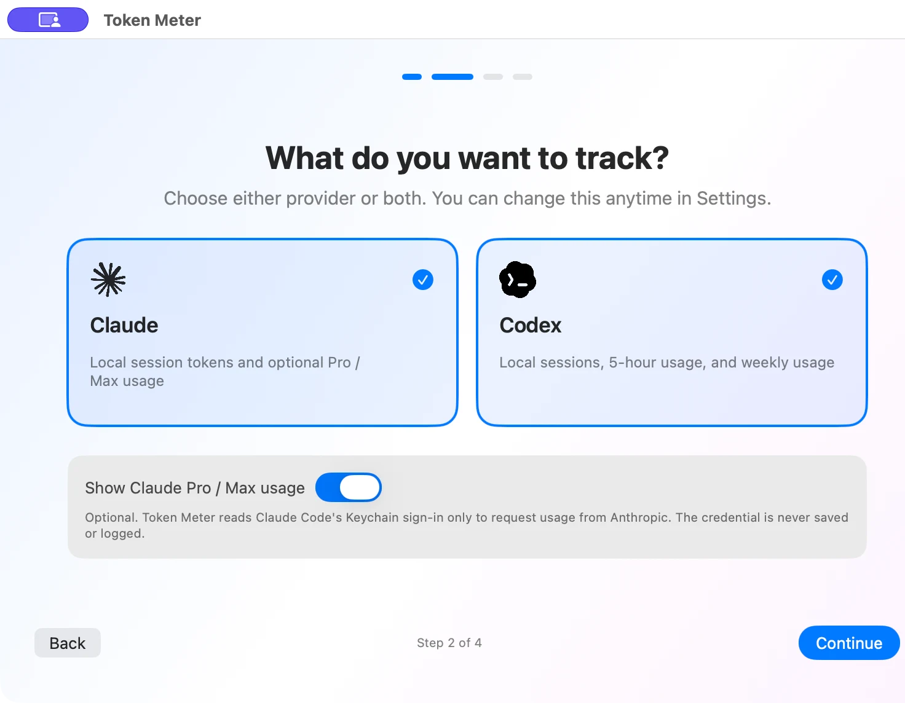
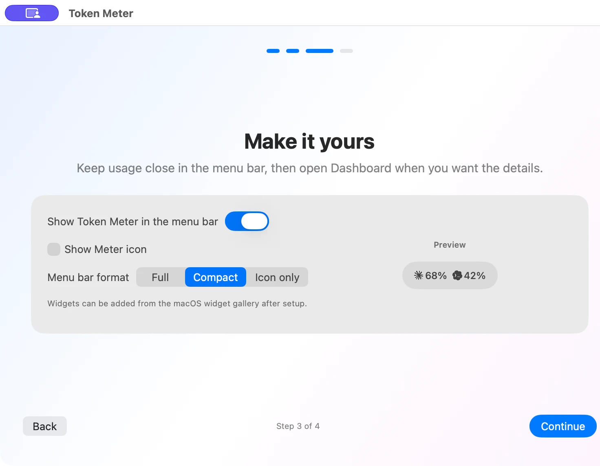
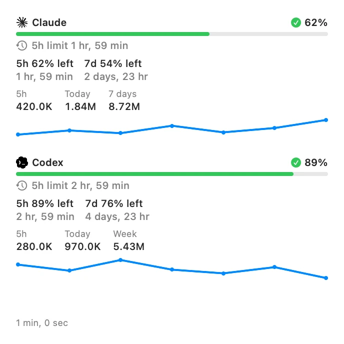
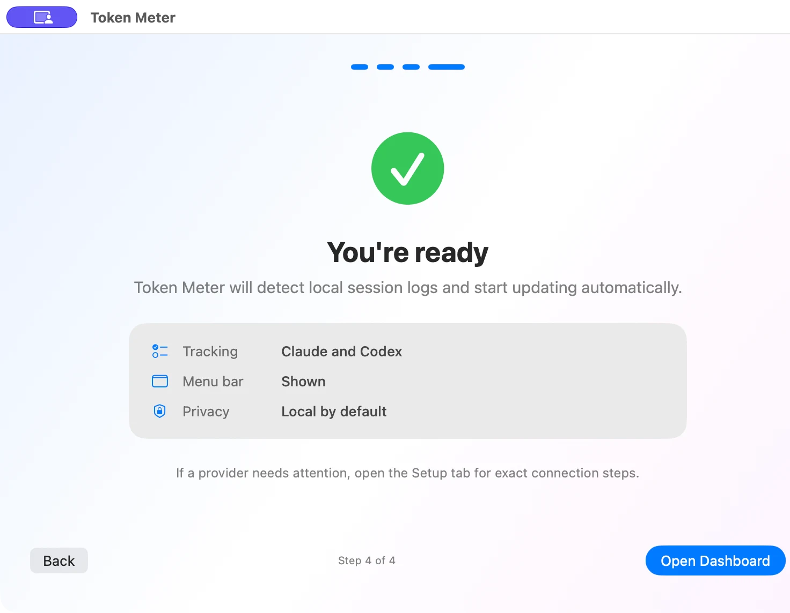

Token Meter.
Your AI usage, at a glance.
Track Claude Code, Codex and Copilot CLI in the menu bar and widgets. A macOS app for checking usage and remaining limits without interrupting your work.
- macOS 14+ · Apple Silicon / Intel
- 3 providers · 4 languages
- Local first
Only the numbers you need, always within sight.
Check remaining usage in the menu bar. Open the dashboard or widgets for five-hour limits, weekly limits and today's token counts. Review up to 90 days of trends and compare with the previous day, 7, 30 or 90 days.
See it in use.
Swipe sideways or use the arrows to browse
Three AIs. One place.
See Claude Code and Codex side by side. GitHub Copilot CLI is also supported for token counts only and is off by default. Choose the providers you use.

A menu bar that works your way.
Choose Full, Compact or Icon only, and select the five-hour or weekly window for Claude Code and Codex. If the five-hour window is selected but unavailable for Codex Pro, the weekly window is shown automatically.

Keep your limits on the desktop.
Check Claude Code and Codex limits, five-hour resets and today's token counts without opening the app.
Three sizes: Small, Medium and Large. Click to open the dashboard.

Your usage history stays on this Mac.
Only token counts, timestamps and model names are aggregated from local session logs. Prompt text, responses and credentials are not stored.
Checking Claude Pro / Max remaining usage is optional. Only when enabled does the app use your Claude Code sign-in to request Anthropic's usage endpoint.
Ready in minutes.
Setup checks whether usage can actually be read for your selected providers. If not, it explains what to fix, such as missing sign-in or session logs. You can finish setup now and connect later.

Download and get started.
Unzip the archive and move Token Meter.app to your Applications folder.
Requires macOS 14 or later, on Apple Silicon or Intel. The current macOS distribution is Developer ID signed and Apple notarized.
Windows development is frozen. Windows is not distributed or supported.
Good to know.
- Currently supported on macOS only. Windows development and distribution have stopped.
- Usage history is aggregated locally. Claude limits are requested from the official usage endpoint only when you enable the feature.
- Supports Japanese, English, Chinese and Korean.